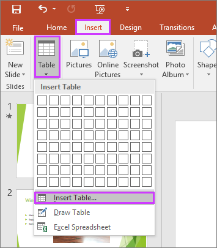

Add & Format Table
Create and format a table in PowerPoint
- Select the slide that you want to add a table to.
- On the Insert tab, select Table.
- In the Insert Table dialog box, do one of the following: Use the mouse to select the number of rows and columns that you want. ...
- To add text to the table cells, click a cell, and then enter your text.
